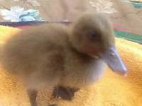
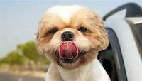
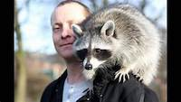
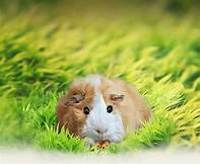
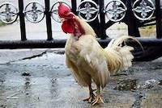
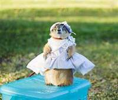

This is Tiki. She has the loudest purr. She came to us as a forlorn street cat. But she loves the bath and playing with yarn.

We care about pets. We're a little messy because we have so many pets that need love. But that's where you come in.
Many people purchase pets without realizing the commitment, love and dedication that it requires to care for these precious creatures. After the "cute" phase, these pets become "nuissances" to many people. The humane way to deal with them is to bring them to an anmial shelter. And so we care for these neglected souls 24/7.
But we need your help! If you are a caring person who possesses the commitment and compassion to care for a pet LONG-TERM, we would love to introduce you to your new love-of-your-life.
Below is a list of pets that urgently need new owners. Please take time to read about each one, then click on the link to fill out your form and send it back to us to reserve that pet. (Limit 2 per customer.)
This is Tiki. She has the loudest purr. She came to us as a forlorn street cat. But she loves the bath and playing with yarn.
This is Tiki. She has the loudest purr. She came to us as a forlorn street cat. But she loves the bath and playing with yarn.
Dennis is the best name for a duck. He loves two things. Soda crackers and the heat lamp. If you give him a warm place and something to eat, he'll snuggle up to you. He's also fun in the bath. 
Fred if everyone's friend. Just like Fred Flintstone, he loves riding in the car. Also, like Fred Flintstone, he likes yelling. But a chew toy will keep him quiet for hours. 
Wilma looks fierce, but she's as docile as a kitten. She has a missing rear right foot, which makes her less mobile. She enjoys eating dried fruits and sleeping next to the radiator. 
Gus is a super Guinea Pig. Be careful. He's fast! Keep him in cage and keep the wheel well oiled. Seriously. Don't let him out. You'll never catch him. Like, ever... 
Jocque the coq. Don't ask. That's how he likes to be addressed. We assume, because of the name, that he's French. If you happen to be a Francophone, it might get you some mileage with this cocky one. 
This is Ted. He likes to play dress up. Yeah. Don't ever call him 'Ted' (unless you're calling him for dinner). It ruins the ambience he creates for himself. 